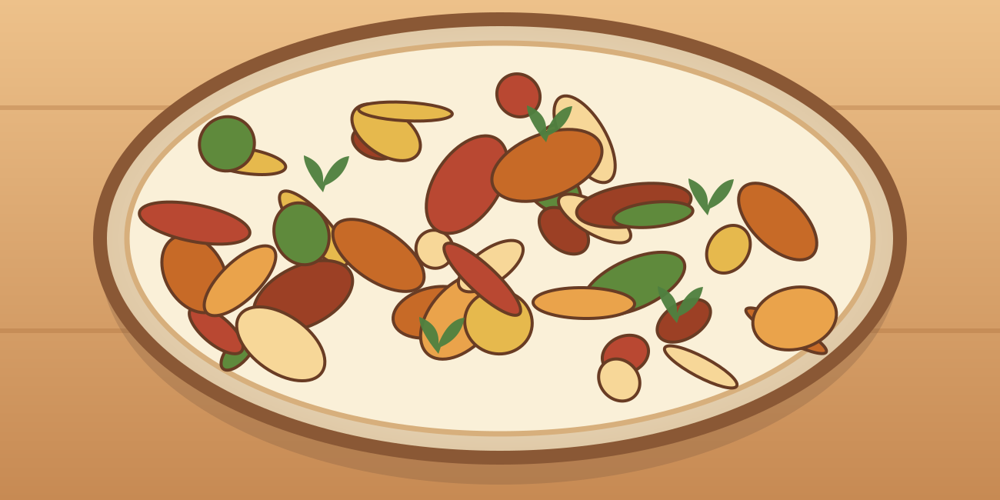

Salade de riz au poulet et œufs
Une grosse portion maison, simple à préparer, avec des légumes et des protéines.
⏱ 25 min🍽 1 grosse portion💰 ≈ 3–5 €💪 ≈ 67 g protéines≈ 780 kcal
Ingrédients
- 200 g de poulet
- 90 g de riz cru
- 2 œufs
- 100 g de concombre
- 100 g de tomate
- 80 g de maïs
- 40 g de yaourt
- 5 ml d’huile
- Citron, sel, poivre
Préparation
- Cuire le riz puis le refroidir rapidement au réfrigérateur.
- Cuire les œufs durs 9 min.
- Faire cuire le poulet en dés avec l’huile jusqu’à cuisson complète.
- Couper concombre et tomate, mélanger au riz refroidi, maïs et poulet.
- Ajouter œufs en quartiers et sauce yaourt-citron.
Conservation et réchauffage
Garder au frais et consommer dans les 24 h ; ne pas laisser le riz à température ambiante.
Nutrition et prix indicatifs : à recalculer selon les marques et quantités dans MyFitnessPal. Les sauces mentionnées sont sans poisson : vérifier les étiquettes.